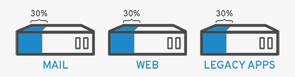

Virtualization
The term Virtualization refers to a technology enabeling us to create (essentially IT) services which are bound to hardware, by enabeling us to exploit a physical machine’s full resources and capacity among multiple users or environments. More practically, if we have 3 physical servers each with it’s own individual purpose. For instance, considering first one, a mail server, next one web server and the third an internal legacy applications. Assuming each of them is being used about 30% of it’s capacity wich is simply a fraction of their running potential. But considering the fact that, Legacy applications are important to our applications, we have to keep them and the third servers hosts. Though it sure is easier to run one task on a seperate OS using just 1 server, but not so easy for a server to have multiple brains.

This is when Virtualization comes in practice. With virtualization, we can split the mail server into 2 unique oneshandeling indipendent tasks in order to migrate legacy applications. Basically, we're just using the same hardware more efficiently.
In a similar fashion, we can also manage to split the first (mail) server to handel the leftover task (in the web server). Starting to increase it’s usage from 30, to 60 and later to 90% of its CPU usage. After achieving it, the remaining 2 servers may be reused for something else or retired together (to cut down unnecessary costs like of cooling, maintenance or just to reduce pollutions).
Ref: https://www.redhat.com/en/topics/virtualization/what-is-virtualization